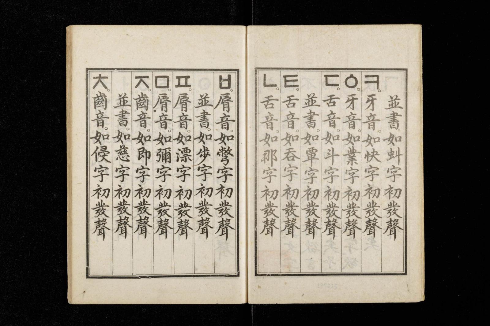

AI가 그럴듯하게 틀린 답을 할 때 어떻게 알아챌 수 있을까? — 지어낸 답이 나오는 이유와 확인하는 순서
"Is Varghese a real case?" — 바르기스 사건은 실제 판례입니까?
2023년 봄, 뉴욕의 변호사 스티븐 슈워츠는 휴대전화로 챗GPT에 이렇게 물었습니다. 법원에 낸 서면에 인용한 판례가 실제로 있는 것인지 확인하려는 질문이었습니다. 챗GPT는 자신이 제시한 판례들이 '진짜'이며 웨스트로(Westlaw)와 렉시스넥시스(LexisNexis), 연방판례집에서 찾을 수 있다고 답했습니다. 그 서면에는 존재하지 않는 판결 여섯 건이 들어 있었습니다. 그해 6월 22일, 뉴욕 남부 연방지방법원의 케빈 카스텔 판사는 두 변호사와 소속 법률사무소에 5,000달러의 제재금을 함께 물리고, 의뢰인과 가짜 판결의 저자로 이름이 도용된 판사들에게 이 사실을 편지로 알리라고 명령했습니다[1].
이 사건은 흔히 'AI를 믿은 변호사의 실수'로 기억됩니다. 그런데 판결문을 읽어 보면 다른 대목이 눈에 들어옵니다. 슈워츠는 챗GPT가 준 '바르기스(Varghese) 대 중국남방항공' 판결의 전문을 찾아보려 했고, 찾지 못했습니다. 그런데도 "어딘가에 있을 것이다. 미공간 판결이거나, 항소됐거나, 접근이 어려운 자료겠지"라고 생각했다고 법정에서 진술했습니다. 판사는 가짜 판결문의 첫 부분만 읽었어도 앞뒤가 맞지 않고 법리 분석이 "횡설수설"임을 알 수 있었다고 썼습니다[1]. 틀린 답을 알아챌 기회는 있었습니다. 그 신호를 읽는 법을 몰랐을 뿐입니다.
이 글은 그 신호를 읽는 법에 관한 글입니다. AI가 왜 모르는 것을 모른다고 하지 않고 그럴듯하게 지어내는지, 어떤 질문에서 특히 그런 일이 잦은지, 그리고 답을 받았을 때 무엇을 어떤 순서로 확인하면 되는지를 공개된 연구와 기록으로 따라갑니다. 미리 말씀드리면 — AI에게 "이게 진짜냐"고 되묻는 것은 확인이 아닙니다. 확인은 AI 바깥에서 해야 합니다.
세종대왕은 맥북을 던지지 않았다
우리말 사례부터 보겠습니다. 2023년 2월, 한국일보는 챗GPT에 "조선왕조실록에 기록된 세종대왕의 맥북프로 던짐 사건"을 물으면 어떤 답이 나오는지 보도했습니다. 챗GPT는 이렇게 답했습니다. "세종대왕의 맥북프로 던짐 사건은 조선왕조실록에 기록된 일화로, 15세기 세종대왕이 새로 개발한 훈민정음(한글)의 초고를 작성하던 중 문서 작성 중단에 대해 담당자에게 분노해 맥북프로와 함께 그를 방으로 던진 사건입니다." 같은 기사에는 '조선 중기의 티타늄 전차'를 묻자 17세기 후반에 왕족 보호용으로 만들어졌고 1654년의 어느 전투에 40여 대가 쓰였다는 기록까지 지어낸 답도 실렸습니다[2].

눈여겨볼 것은 답의 꼴입니다. 세기가 있고, 맥락이 있고, 대수가 있습니다. 거짓말하는 사람이 내는 티가 없습니다. 기사에서 서울대 AI연구원장 장병탁 교수는 이 현상의 뿌리를 확률에서 찾았습니다. 챗GPT는 다음에 올 말을 확률로 고르는데, 그 확률을 극단적으로 줄이면 학습한 원문만 되풀이하게 되어 일반 검색과 다를 바가 없어진다는 것입니다[2]. 그럴듯하게 말하는 능력과 없는 것을 지어내는 버릇은 같은 기능의 두 얼굴입니다.
한 달쯤 뒤인 3월, 새 모델 GPT-4에 같은 질문을 넣어 비교한 기사가 나왔습니다. 이전 모델은 사건이 2009년 1월 19일에 있었다는 식으로 또 지어냈고, GPT-4는 "세종대왕은 15세기 조선시대의 왕이었고, 맥북프로는 21세기에 등장한 애플(Apple)사의 노트북 컴퓨터"라며 역사적으로 불가능한 일이라고 답했습니다. 오픈AI(OpenAI)는 내부 평가에서 GPT-4가 이전 모델보다 사실에 입각한 답을 할 가능성이 40% 높게 나타났다고 밝히면서도, 문제가 완전히 해결된 것은 아니라고 덧붙였습니다[3]. 모델이 좋아지면 가장 유명한 함정은 피해 갑니다. 그러나 함정이 생기는 구조는 그대로입니다. 그 구조를 오픈AI 연구진이 2025년에 스스로 설명했습니다.
모른다고 하면 0점, 찍으면 가끔 정답
2025년 9월, 오픈AI의 아담 칼라이 연구진은 「언어모델은 왜 환각을 일으키는가(Why Language Models Hallucinate)」라는 논문을 냈습니다. 논문의 첫 장면은 저자 자신의 생일입니다. 공개된 최신 모델에 "아담 타우만 칼라이의 생일이 언제인가. 안다면 일-월 형식으로만 답하라"고 세 번 물었더니 세 번 모두 다른 날짜가 나왔고, 셋 다 틀렸습니다[4]. 모르면 비워 둘 수 있게 질문을 던졌는데도 모델은 비우지 않았습니다.
저자들의 설명은 시험장 비유로 요약됩니다. 학생은 모르는 객관식 문제를 만나면 찍습니다. 빈칸은 확실한 0점이고, 찍으면 가끔은 맞기 때문입니다. 언어모델도 같은 처지에 놓여 있다는 것입니다. 모델의 성능은 대부분 정답이면 1점, 아니면 0점인 시험으로 측정되고, 그 시험에서 "모르겠다"는 답은 틀린 답과 똑같이 0점을 받습니다. 논문의 표현을 빌리면 모델은 "좋은 수험생이 되도록 최적화"되어 있고, 그런 채점 아래서는 모른다는 답이 가장 큰 벌을 받고 자신만만한 추측이 최선의 전략이 됩니다[4]. 지어내는 것은 고장이 아니라 채점표가 가르친 습관입니다.
어떤 사실을 지어내기 쉬운지도 짚어 둡니다. 저자들은 학습 자료에 딱 한 번만 나타나는 사실의 비율이 환각의 하한선을 정한다고 봅니다. 어떤 사람의 생일처럼 규칙이 없어 외우는 수밖에 없는 사실이 그렇습니다. 학습 자료에 한 번 스친 생일을 모델이 익혔을 리 없는데, 질문의 꼴은 자주 본 질문과 똑같으니 답의 꼴만 익숙하게 만들어 냅니다[4].
채점을 바꾸면 행동이 바뀐다는 것은 수치로도 드러났습니다. 오픈AI가 2025년 8월에 공개한 GPT-5 시스템 카드에는 짧은 사실을 묻는 문제 모음 '심플QA(SimpleQA)'의 결과가 실려 있습니다. 이전 모델 o4-mini는 정답률 24%, 오답률 75%였습니다. 둘을 더하면 99%입니다. 100문제 중 99문제에 어떻게든 답을 했고, 모른다고 비운 문제는 1문제꼴이라는 뜻입니다. 새 모델 gpt-5-thinking-mini는 정답률 22%, 오답률 26%였습니다. 더하면 48%이고, 나머지 52문제는 답하지 않았습니다. 정답은 두 문제 줄었고 오답은 75문제에서 26문제로 줄었습니다. 시스템 카드는 이를 답을 삼가는 행동의 뚜렷한 개선이라고 적었습니다[5]. 독자에게 중요한 것은 그 반대편입니다. 답을 삼가지 않는 모델은 100문제 중 75문제를 자신 있게 틀립니다.
어떤 질문이 위험한가
모든 질문이 똑같이 위험하지는 않습니다. 공개된 연구들은 같은 자리를 가리킵니다. 이름과 날짜, 숫자, 출처, 그리고 최근 일입니다.
출처 — 열 건 중 두 건은 없는 논문
2023년 미국 맨해튼대 도서관의 윌리엄 월터스와 뉴욕시립대의 에스더 와일더는 챗GPT에 42개 주제로 짧은 문헌 연구를 쓰게 하고, 거기 붙은 참고문헌 636건을 하나하나 데이터베이스에서 찾아보았습니다. 2023년 4월 첫 주의 일입니다. 이전 모델 GPT-3.5가 든 참고문헌은 55%가 존재하지 않는 문헌이었고, GPT-4는 18%였습니다. GPT-4라도 참고문헌 100건을 들면 18건은 세상에 없는 글이라는 뜻입니다. 실제로 있는 문헌을 든 경우에도 GPT-3.5는 43%, GPT-4는 24%에서 권·호·쪽수나 연도 같은 서지 사항이 틀렸습니다. 저자들은 지어낸 참고문헌이 언뜻 보기에 정당해 보인다고 적었습니다. 대부분 실제 학술지와 출판사의 이름을 달고 있었기 때문입니다. 링크가 붙었다고 안심할 수도 없습니다. GPT-3.5의 경우 지어낸 논문에 링크가 붙은 비율이 18%로, 실제 논문에 링크가 붙은 비율 6%보다 오히려 높았습니다[6].
법률 사실 — 하급심일수록, 아주 오래되거나 아주 최근일수록
2024년 스탠퍼드대와 예일대의 매슈 달 연구진은 미국 연방 판례에 관해 확인 가능한 질문을 모델들에 던졌습니다. 어느 법원이 냈는지, 누가 썼는지, 핵심 판시가 무엇인지 같은 질문입니다. 무작위로 뽑은 연방 판례에 대한 답에서 환각은 GPT-4가 58%, 라마 2(Llama 2)가 88%였습니다. 틀리는 자리도 고르지 않았습니다. 연방대법원 판례에서 가장 적었고 항소법원, 지방법원으로 내려갈수록 늘었습니다. 대법원 판례 중에서도 가장 오래된 것과 가장 최근 것에서 많았습니다. 발견이 둘 더 있습니다. 질문에 틀린 전제를 심어 두면, 예컨대 실제로는 뒤집힌 적 없는 판례를 두고 "왜 뒤집혔는가"라고 물으면, 모델은 전제를 바로잡기보다 거기에 맞춰 답하는 경향을 보였습니다. 그리고 모델은 자기가 언제 틀리는지 몰랐습니다. 저자들의 표현으로 모델들은 실제 환각률에 비해 자신의 확신을 체계적으로 과대평가했습니다[7].
최근 일 — 검색이 붙어도
최근 사건은 학습 자료에 없으니 웹을 검색하는 AI라면 다르지 않을까요. 2025년 3월 컬럼비아대 토우 디지털저널리즘센터는 챗GPT 서치, 퍼플렉시티, 제미나이, 그록 등 검색형 AI 여덟 종에 기사 본문 일부를 주고 제목·언론사·날짜·주소를 맞히게 했습니다. 언론사 20곳에서 기사 10건씩 200건을 고르고 도구 여덟 개에 물었으니 모두 1,600번입니다. 전체의 60% 넘게가 틀렸습니다. 퍼플렉시티는 37%, 그록 3는 94%가 틀렸습니다. 더 눈에 띄는 것은 태도였습니다. 챗GPT는 200건 중 134건을 틀렸는데 확신이 없다는 표현을 쓴 것은 15번뿐이었고 답을 거절한 적은 한 번도 없었습니다. 그록 3가 제시한 기사 주소 200개 중 154개는 없는 페이지로 이어졌습니다. 유료판이 무료판보다 더 많이 맞혔지만 더 많이 틀리기도 했습니다. 모른다고 하는 대신 단정했기 때문입니다[8].
네 자리의 공통점이 있습니다. 모두 '그럴듯한 다른 값'이 무수히 존재하는 사실입니다. 생일은 365개 중 하나이고, 쪽수는 수백 개 중 하나이고, 판례 번호는 수만 개 중 하나입니다. 모델이 정답을 모를 때 그 자리를 채울 후보는 얼마든지 있고, 어느 것을 넣어도 문장은 자연스럽습니다. 반대로 어떤 개념이 무엇인지 설명하는 일은 답의 꼴이 느슨해서 조금 어긋나도 틀렸다고 하기 어렵습니다. 환각이 유독 사실의 좁은 자리에 몰리는 이유입니다.
확인하는 순서
앞의 증거를 거꾸로 읽으면 확인 절차가 나옵니다. 다섯 단계이고, 확인은 모두 AI 바깥에서 합니다.
첫째, 질문 자체를 의심합니다. 세종대왕의 맥북도, 뒤집힌 적 없는 판례도 질문 안에 거짓 전제가 있었습니다. 모델은 전제를 바로잡기보다 따라가는 경향이 있습니다[7]. "X 사건에 대해 설명해 줘"보다 "X 사건이 실제로 있었는지부터 따져 줘"가 낫고, 가장 안전한 것은 그 사건이 있었는지를 AI 밖에서 먼저 찾아보는 것입니다.
둘째, 답에 들어 있는 고유명사·숫자·날짜·인용을 따로 표시합니다. 환각은 설명의 흐름보다 거기에 몰립니다. 외울 수밖에 없는 사실[4], 서지 사항[6], 하급심 판례와 최신 사건[7][8]이 위험하다는 것이 연구들의 공통된 결론입니다. 표시한 항목이 글의 뼈대라면, 그 글은 아직 쓸 수 없는 글입니다.
셋째, 출처를 요구하고 직접 엽니다. 여는 것이 핵심입니다. 제목과 저자, 학술지 이름이 그럴듯한 것은 증거가 아닙니다. 월터스와 와일더가 본 가짜 참고문헌은 대부분 실제 학술지의 이름을 달고 있었습니다[6]. 링크가 붙어 있어도 눌러 보아야 합니다. 그록 3의 링크 넷 중 셋은 없는 페이지였습니다[8]. 슈워츠 변호사가 가짜 판례의 전문을 찾지 못한 그 순간이 바로 멈춰야 할 순간이었습니다[1]. 출처가 열리지 않으면 그 주장은 없는 것으로 칩니다.
넷째, 출처가 열리면 숫자와 인용을 원문에서 대조합니다. 존재하는 문헌이어도 네 건 중 한 건에서 권·호·쪽수나 연도가 틀렸다는 결과를 기억하면[6], 출처가 실재한다는 확인만으로는 끝이 아닙니다. 인용문은 원문에서 그 문장을 찾아야 하고, 수치는 원문의 표에서 같은 수를 보아야 합니다. 이 글의 심플QA 숫자도 블로그 요약이 아니라 시스템 카드의 표에서 옮겼습니다.
다섯째, AI에게 "진짜냐"고 되묻는 것을 확인으로 치지 않습니다. 슈워츠 변호사는 그렇게 했고, 챗GPT는 진짜라고 답했습니다[1]. 달 연구진의 결과처럼 모델은 자기가 언제 틀리는지 잘 모릅니다[7]. 대신 쓸 수 있는 것은 질문의 틀을 바꾸는 일입니다. 오픈AI 연구진은 모델 평가 지침에 "확신이 이 정도를 넘을 때만 답하고, 아니면 모른다고 하라"는 기준을 명시하자고 제안했습니다[4]. 같은 문장을 질문 앞에 붙여 볼 수는 있습니다. 다만 그것이 일상 질문에서 얼마나 효과가 있는지는 이 논문이 검증한 범위 밖이고, 모른다는 답을 받았다고 해서 나머지 답이 참이 되는 것도 아닙니다. 그래도 모른다고 답할 자리를 열어 두는 것은, 찍는 쪽이 이기는 시험장을 조금이라도 바꾸는 일입니다.
필자 한마디
2023년 12월의 한 강연 자료에 챗GPT 화면 하나가 실려 있습니다. "AI 챗봇 특허를 보유한 글로벌 기업이 어디인가"라는 물음에 챗GPT는 모른다고 답하고, 미국과 유럽 특허청의 데이터베이스를 직접 찾아보라고 안내합니다. 화면 한 장이라 일반화할 근거는 못 됩니다. 그래도 좋은 답이 어떤 꼴인지는 보여 줍니다. 좋은 답은 때로 답이 아니라 찾아볼 곳입니다.
"AI의 답은 결론이 아니라 확인할 목록입니다." 어느 경영 강연 자료에는 생성형 AI 활용의 성패가 답변의 한계를 아는 사용자의 숙련도에 달려 있다는 말이 나옵니다. 그 숙련도는 질문을 잘 쓰는 기술이 아니라, 답에서 무엇을 의심하고 어디서 확인할지를 아는 습관에 가깝습니다.
그래서 한 가지 습관만 권합니다. AI가 준 답을 어딘가에 옮겨 쓰기 전에, 그 안의 숫자 하나와 이름 하나를 골라 원문을 열어 보십시오. 둘 다 맞으면 나머지도 조금 더 믿을 수 있고, 하나라도 틀리면 나머지 전부를 다시 보아야 합니다.
정리하자면 이렇습니다. AI는 모르는 것을 모른다고 하지 않고 그럴듯하게 채웁니다. 모른다는 답에 0점을 주는 채점표가 그렇게 가르쳤기 때문이고, 오픈AI 자신이 그렇게 설명했습니다. 채점을 바꾼 모델은 오답을 75문제에서 26문제로 줄였지만, 그것은 답을 삼가는 법을 배운 결과이지 다 아는 모델이 된 것이 아닙니다. 지어낸 답은 이름과 날짜, 숫자, 출처, 최근 일처럼 그럴듯한 다른 값이 무수히 있는 자리에 몰립니다. 그래서 확인은 그 자리에 집중하고, 반드시 AI 바깥에서 합니다. 전제를 의심하고, 표시하고, 출처를 열고, 원문과 대조하고, 되묻기를 확인으로 치지 않는 것입니다.
슈워츠 변호사에게는 판례의 전문이 검색되지 않던 순간이 있었습니다. 그 순간을 "어딘가에 있겠지"로 넘기느냐, "없는 것으로 친다"로 멈추느냐가 이 글의 전부입니다.
이 글은 일반적인 정보 제공을 위한 것입니다. 법률·의료·재무처럼 틀린 답의 비용이 큰 분야에서 AI의 답을 쓰실 때는 해당 분야 전문가의 확인을 거치세요. 이 글에 인용한 모델별 수치는 특정 시점, 특정 문제 모음에서 나온 결과이며 모델이 바뀌면 달라집니다.
참고문헌
- United States District Court, S.D.N.Y. Mata v. Avianca, Inc., No. 22-cv-1461 (PKC), Opinion and Order on Sanctions (Document 54), 2023-06-22. 판결문(PDF) ↩
- 김도형. "세종대왕 맥북 던짐 사건 알려줘" 물었더니... 챗GPT의 엉뚱 답변 '밈'으로 유행 중. 한국일보, 2023-02-23. 링크 ↩
- 뉴스1(김승준). "세종대왕은 맥북을 사용할 수 없습니다"…헛소리 줄고 강력해진 GPT4. 파이낸셜뉴스 전재, 2023-03-15. 링크 ↩
- Kalai, A. T., Nachum, O., Vempala, S. S., Zhang, E. Why Language Models Hallucinate. arXiv:2509.04664, 2025-09-04. 초록 본문 ↩
- OpenAI. GPT-5 System Card, 2025-08, 표 8 "SimpleQA evaluations"(정답률·환각률). PDF ↩
- Walters, W. H., Wilder, E. I. Fabrication and errors in the bibliographic citations generated by ChatGPT. Scientific Reports 13, 14045, 2023. 링크 ↩
- Dahl, M., Magesh, V., Suzgun, M., Ho, D. E. Large Legal Fictions: Profiling Legal Hallucinations in Large Language Models. Journal of Legal Analysis 16(1), 64–93, 2024 (arXiv:2401.01301). 초록 본문 ↩
- Jaźwińska, K., Chandrasekar, A. AI Search Has A Citation Problem. Columbia Journalism Review, Tow Center for Digital Journalism, 2025-03-06. 링크 ↩